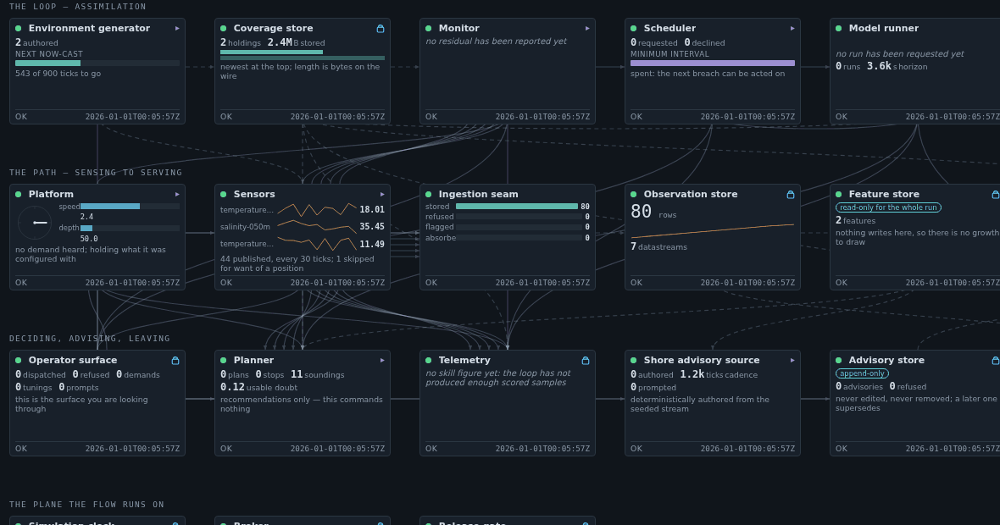
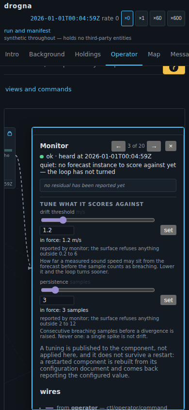

A card you can read and a card you can use are different sizes

The background
One screen draws the running system as a diagram: twenty components, wired by their actual connections, each with its own instrument. All twenty must be visible at once — the shape of the system is what the diagram is for — which fixes each box at 200 by 116 pixels.
At that size you see the drift line climbing and cannot read what it climbed to. Those boxes had also just gained sliders that change the running system: at that size, a picture of a control rather than one.
The requirement
Selecting a component opens it — big enough to read a figure off and move a slider in — with the rest of the diagram getting out of the way rather than being covered.
The options considered
A card floating over the diagram is the cheap build and a modal with extra steps: it hides the neighbours you opened this one to compare against, and every wire runs to a box underneath something.
So the diagram makes room, and animates doing it — asked for after the first version shipped, because opening a box moves most of the diagram at once and the one that grew is not distinguished by having moved.
It could not be a CSS transition: the wires are computed from where the boxes are, so a transition would glide the boxes and leave fifty wires pointing where they used to be. What moves is the layout itself, re-routed every frame — watch the wires stay on the card above.
The demo
Open it at the Operator view and click any box with a ▸. Press → to walk the twenty. The same card on a phone, taller and narrower because the space a phone has is vertical:
